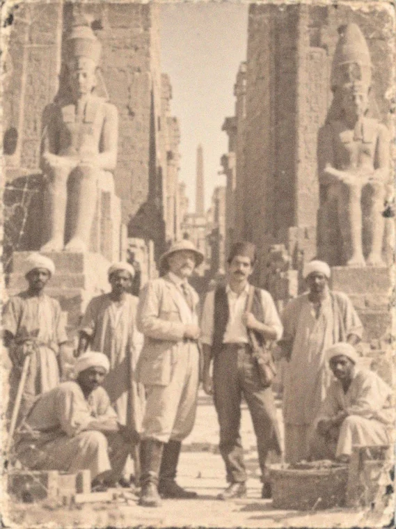
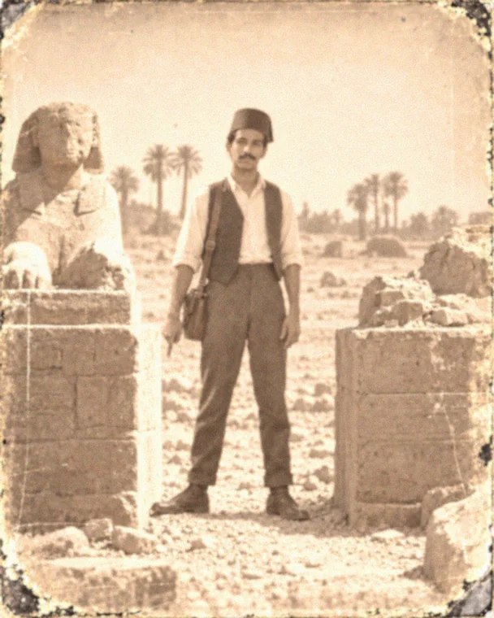
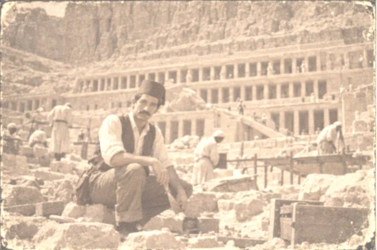
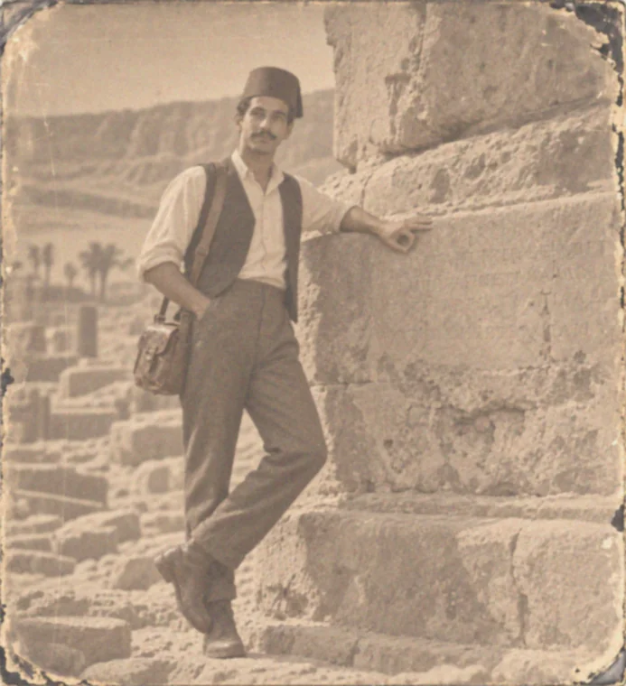
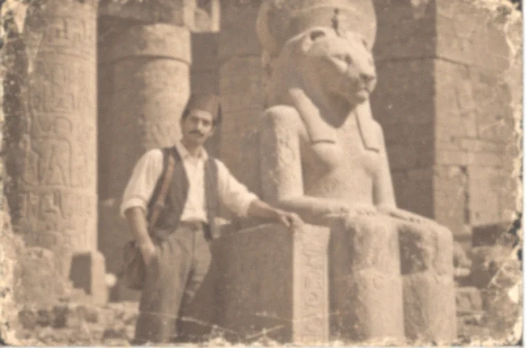
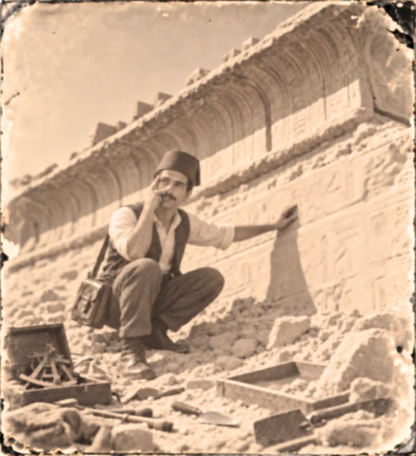

From the office walls · c. 1900
Some plates are worn, others blurred by age. Click any photograph to open the larger original and look closer. The photographs may have faded. The curiosity hasn't.

Karnak expedition crew
Girgis with fellow excavators and a visiting European archaeologist at Karnak.

the Alley of the Sphinxes
A surviving photograph of Girgis between two weathered sphinx plinths.

Deir el-Bahri excavations
Early work among the terraces and debris below Hatshepsut’s temple.

Stonework on the West Bank
Girgis pauses beside heavily weathered stonework on the Theban West Bank.

Sekhmet at Karnak
Girgis photographed with a lioness-headed statue of Sekhmet.

The Temple of Khnum
Girgis examines carved stone amid the ruins and tools of an early excavation.